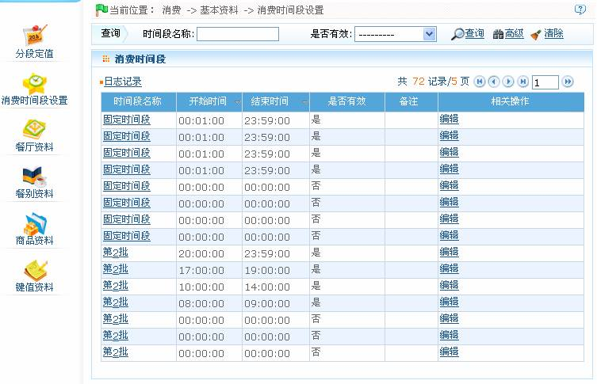
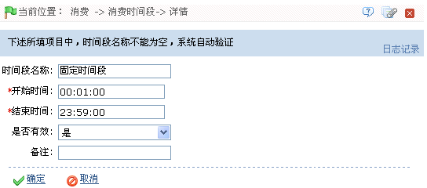

IC--8.2.2 消费时间段设置
点击【消费】 【基本资料】
【基本资料】 【消费时间段设置】，进入如下图所示的消费时间段设置页面：
【消费时间段设置】，进入如下图所示的消费时间段设置页面：

系统默认具有1个固定时间段和8个（第2批-第9批）批次时间段，每个时间段分别可以设置8个时间段。
-
 编辑消费时间段
编辑消费时间段
 提示：操作前请仔细阅读页面中的操作提示。
提示：操作前请仔细阅读页面中的操作提示。
1、单击消费时间段的“时间段名称”，或消费时间段所在行的“相关操作”下对应的【编辑】按钮，进入编辑消费时间段页面：

根据需要修改各参数，具体修改方法如下（注意：“时间段名称”不可修改。）：
开始时间、结束时间：设置该消费时间段的开始和结束时间。时间的设置，请参见附录1 常用操作中的3. 选择时间。
是否有效：默认为“是”（即“有效”），可单击 按钮，在弹出的下拉框中，选择为“是”或“否”，选择为“是”该消费时间段才有效，否则，为无效。
按钮，在弹出的下拉框中，选择为“是”或“否”，选择为“是”该消费时间段才有效，否则，为无效。
2、设置完成后，单击【确定】保存，并返回“消费时间段设置”页面；此时“消费时间段”列表中将显示修改后的消费时间段信息。